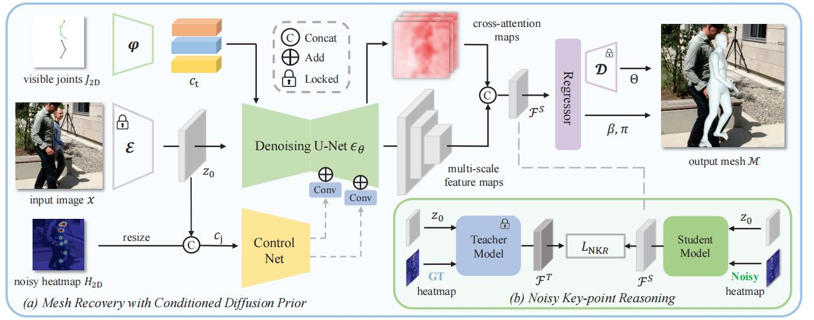
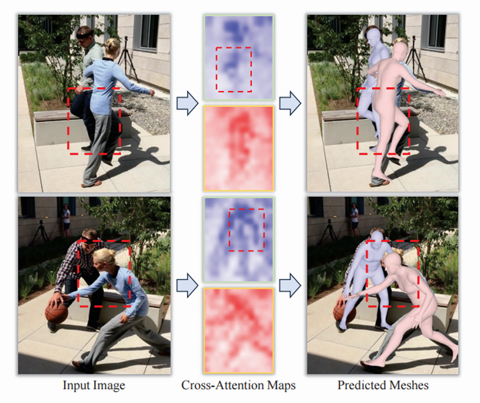

论文阅读笔记——DPMesh:Exploiting Diffusion Prior for Occluded Human Mesh Recovery
本文最后更新于：2025年5月6日 下午
论文阅读笔记——DPMesh: Exploiting Diffusion Prior for Occluded Human Mesh Recovery
一、前言
1.1 研究背景
人体网格恢复旨在从单目或多视图图像及视频中精确估计 3D 人体姿势与形状，在电影制作、游戏开发和体育等领域具有广泛应用前景。深度学习技术的发展推动了该领域的进步，但在复杂场景中，如存在遮挡和拥挤情况时，从单目图像中提取有效信息以准确恢复人体网格仍极具挑战性。
现有方法虽尝试多种策略，如引入 2D 先验知识或利用扩散模型，但仍存在诸多问题。传统方法依赖 2D 对齐，在严重遮挡时因 2D 检测器受噪声和遮挡干扰而导致精度下降。基于扩散模型的方法虽有成果，但存在迭代耗时且未充分挖掘扩散模型知识潜力的局限。
1.2 研究目的
致力于提出一种名为 DPMesh 的框架，旨在充分利用预训练扩散模型中关于对象结构和空间关系的丰富知识，克服现有方法在遮挡人体网格恢复任务中的种种缺陷，实现精准且稳健的 3D 人体网格恢复，尤其着重于提升模型在复杂遮挡和拥挤场景下的性能表现，为人体网格恢复技术在实际应用中的推广提供有力支持。
二、研究方法
2.1 总体框架分析

1.输入阶段
- 输入图像首先进入系统，同时结合预检测的 2D 关键点 和生成的热图 。这些 2D 信息为后续处理提供了初步的人体姿态和位置线索，有助于引导模型关注关键区域。
1.这里的2D 关键点检测运用的是现成的（off - the - shelf）2D 关键点检测器来获取 2D 关节信息 以及对应的置信度。
2. 通过二维高斯核将预检测的 2D 关键点转换为热图.其作用是根据关键点的位置生成一个以关键点为中心的高斯分布。对于每个关键点，高斯核函数会在其周围产生一个值逐渐递减的区域，使得关键点位置的值最高，周围区域的值随着距离关键点的增加而逐渐降低。这样生成的热图能够突出关节位置及其周围区域的重要性，将关键点的位置信息转化为一种具有空间分布特性的表示形式。
2.特征提取阶段（基于扩散模型）
- 输入图像经冻结的编码器转换为潜在表示，然后送入预训练的去噪 U - Net。这一过程利用了扩散模型在大规模图像生成训练中学习到的丰富视觉感知能力，能够从图像中挖掘出深层次的结构和空间关系信息。
- 从去噪 U - Net 的解码层提取多尺度特征图和交叉注意力图 ，并将它们连接形成分层特征图。
- 多尺度特征图包含不同层次的图像特征，从局部细节到全局结构都有所涵盖；
- 交叉注意力图则聚焦于不同特征之间的关联，尤其是与遮挡相关的信息。
- 例如在处理遮挡人体时，交叉注意力图能够突出显示被遮挡部分与可见部分之间的关系，为准确恢复被遮挡区域提供重要依据。
3.条件注入与引导阶段
- 通过 ControlNet 架构，将热图 与潜在表示拼接形成的复合条件注入去噪 U - Net，同时将提升维度后的关节坐标条件输入交叉注意力块。
这些条件为模型提供了额外的空间和姿态信息，引导模型在特征提取和后续处理中更加关注关键区域和重要特征，增强了模型对遮挡情况的感知和处理能力。
4.SMPL 网格回归阶段
- 分层特征图被输入到 SMPL 网格回归器中，该回归器采用级联 Transformer 解码器结构，能够有效地捕捉特征图中的人体信息。通过训练 VQVAE 学习到的人体姿势离散表示，回归器可以准确预测 SMPL 模型的参数，包括人体姿势、形状和相机参数。
这一过程将从图像中提取的特征转化为具体的人体网格模型参数，实现了从 2D 图像到 3D 人体网格的重建。
5.噪声关键点推理增强阶段
- 噪声关键点推理（NKR）方法在整个框架中起到增强模型鲁棒性的作用。通过训练教师模型和学生模型，利用精确的地面实况关键点和噪声关键点分别编码特征图，然后通过最小化 SimCLR 损失和 MSE 损失，使学生模型学习到更具鲁棒性的特征表示，减少了 2D 关键点检测噪声对模型的影响，确保在存在噪声的情况下，模型仍能准确恢复人体网格。
2.2 各阶段公式详细分析
2.2.1 输入阶段
在输入阶段，主要是获取输入图像并结合预检测的 2D 关键点和生成的热图，为后续处理提供基础信息。虽然没有特定的复杂公式，但涉及到一些数据处理和表示的基本操作。
2.2.1.1 数据获取与表示
- 输入图像作为原始数据进入系统，同时利用 2D 关键点检测器获取预检测的 2D 关键点以及对应的置信度信息。
- 接着，通过二维高斯核将 2D 关键点转换为热图，热图的生成公式表示为（这里表示二维高斯核函数）。
热图能够以一种更具空间分布特性的方式表示关键点信息，突出显示关节位置及其周围的区域重要性。例如，对于一个关节点，热图在该点位置会形成一个以该点为中心的高斯分布，其值在关节点处最高，向周围逐渐降低，从而强调了关节点周围区域对于后续处理的重要性。
2.2.2 特征提取阶段（基于扩散模型）
2.2.2.1 输入图像潜在表示生成
- ，其中为冻结的编码器。输入图像经此编码器转换为潜在表示，为后续利用扩散模型进行特征提取做准备，蕴含了图像基本特征。
输入图像经冻结的编码器转换为潜在表示。
冻结的编码器在预训练中已学会将图像映射到合适的潜在空间，使得能以利于模型处理的形式蕴含图像基本特征。
2.2.2.2 特征图提取与组合
- 公式用于在去噪 U - Net 解码层中处理特征图。是前一层输出，是神经网络，是去噪 U - Net 内部参数，是 ControlNet 参数，是零卷积层参数（初始化零值）。
- 在去噪 U - Net 的解码层中，首先经过神经网络的处理，这是常规的特征转换过程，用于提取和更新图像特征。
- 同时，条件经过的处理后，再通过零卷积层与前一层的输出相加，得到当前层的特征图。
零卷积层的特殊初始化方式（权重和偏差初始化为零）有助于在不干扰原有特征的基础上引入条件信息。
- 公式将多尺度特征图与相同分辨率交叉注意力图连接成分层特征图。
- 多尺度特征图能够从不同层次捕捉图像信息，小尺度特征图可能聚焦于人体关节的细微纹理和局部结构关系，大尺度特征图则更关注人体整体的姿态和轮廓。
- 交叉注意力图蕴含丰富的遮挡感知信息，能明确指示人体姿势和形状中的不可见部分以及对象结构知识。例如在遮挡场景下，交叉注意力图可以突出显示被遮挡身体部分与可见部分之间的关联关系，帮助模型理解被遮挡部分的结构和姿态。
- 将它们连接形成的分层特征图整合了多尺度特征和遮挡相关信息，为后续回归操作提供了全面且有价值的先验信息。在回归过程中，模型可以利用这些先验信息更准确地预测人体模型的参数，从而提高人体网格恢复的准确性，尤其是在遮挡场景下，能够更好地还原被遮挡部分的人体网格结构
2.2.3 条件注入与引导阶段
- 在 ControlNet 框架中，用于生成第步的噪声图像。其中是输入图像经训练的 VQGAN 编码器投影得到的潜在表示，其中是标准正态分布的噪声。
这个公式模拟了扩散过程中图像逐步被噪声污染的过程，是扩散模型的基础公式之一。通过控制的值，可以调整不同训练步骤中噪声的添加程度，从而影响模型对图像特征的学习和表示。
在 DPMesh 中，利用这个公式生成的噪声图像参与后续的条件注入和特征提取过程，为模型提供多样化的输入，有助于增强模型对不同遮挡程度和场景变化的适应性。
- ControlNet 框架的训练目标函数。其中是原始输入图像的潜在表示，表示扩散过程中的时间步， 是从冻结的 CLIP 文本编码器提取的文本条件嵌入，是任务特定条件（如人体骨架姿势或 canny 图），是噪声，是去噪 U - Net。
该公式的目的是训练去噪 U - Net，使其能够根据输入的噪声图像、时间步、文本条件和任务特定条件，准确地预测出噪声。
在 DPMesh 中，通过最小化这个损失函数，使得模型能够学习到如何根据条件信息有效地去除噪声，从而恢复出清晰且包含丰富信息的图像特征，为后续的人体网格恢复任务提供高质量的特征表示。
- 用于构建条件。
- 首先，通过利用二维高斯核将预检测的 2D 关节信息转换为热图，热图能够突出显示关节位置及其周围的区域重要性。
- 然后，通过将热图与输入图像的潜在表示在通道维度上进行拼接，形成复合条件。
这种拼接方式能够将 2D 关节的空间位置信息有效地融入到图像的潜在表示中，为模型提供了关于人体姿态的关键线索，引导模型在特征提取过程中更加关注与人体关节相关的区域，从而提高对遮挡情况下人体姿态的感知能力。
- 描述了在去噪 U - Net的解码层中，如何将条件注入到特征图中。其中是前一个解码层的输出，表示一个训练好的神经网络，是去噪 U - Net 内部的参数，是 ControlNet 中的参数，是零卷积层的参数（权重和偏差初始化为零）。该公式的含义是，解码层的输出不仅依赖于前一层的输出，还通过将条件经过处理后融入到特征图中。
这样，条件信息能够在特征提取的过程中逐步影响模型对图像的理解，使模型能够根据 2D 关节信息调整特征提取的重点，增强对遮挡区域的特征表示能力，从而更好地恢复被遮挡的人体网格。
- 用于生成辅助空间条件。通过将可见的 2D 关节坐标输入一个两层的多层感知机（MLP），将其维度提升到与预训练扩散模型中的文本标记维度（在本文中设置为 768）相匹配，得到辅助空间条件。
- 然后，作为提示引导信息被输入到去噪 U - Net 的所有交叉注意力块中。
这有助于模型在特征提取过程中更好地利用 2D 关节的空间位置信息，进一步增强模型对人体姿态和空间结构的理解，尤其是在遮挡情况下，能够更准确地定位和恢复被遮挡部分的人体网格。
2.2.4 SMPL 网格回归阶段
2.2.4.1 姿势参数预测
- 公式预测 VQVAE 码本条目索引，将特征图信息映射到 VQVAE 离散姿势空间获取初步信息。再通过将相应姿势嵌入输入 VQVAE 解码器获取姿势参数。
在复杂姿态人体图像且部分身体遮挡时，基于 VQVAE 的姿势预测可根据未遮挡部分特征和姿势先验推测被遮挡部分姿势。
2.2.4.2 形状和相机参数回归
- 公式和直接用线性层处理特征图预测形状参数和相机参数。
线性层从特征图捕捉人体体型胖瘦等特征确定形状参数，根据图像人体大小位置等信息推断相机参数，完成从 2D 图像到 3D 人体网格重建准备，在复杂场景保持较高准确性。
2.2.5 噪声关键点推理增强阶段
2.2.5.1 教师模型与学生模型的训练
- 总损失函数由对比学习损失和均方误差损失组成。
目的是提升模型对噪声关键点处理能力，增强复杂遮挡场景下稳定性和准确性。
- 是学生模型特征图，是教师模型特征图。
该公式通过计算特征图距离关系促使学生模型学习更具判别性特征表示，增强对遮挡情况下关键点的鲁棒性。
- 损失用于进一步对齐教师和学生模型特征图。
通过计算均方误差确保学生模型特征数值与教师模型更接近，稳定学生模型学习过程，使学生模型捕捉教师模型有效特征，减少噪声关键点干扰。
如处理复杂遮挡场景人体图像时，即使 2D 关键点检测有噪声，最小化均方误差损失可让学生模型学习教师模型稳定准确特征表示，提高复杂遮挡场景下性能表现，确保模型准确恢复人体网格。
2.2.6 训练阶段
2.2.6.1 损失函数计算与优化
在训练阶段，DPMesh 框架通过精心设计的损失函数和优化策略来调整模型参数，以提高模型在遮挡人体网格恢复任务中的性能。
- 整体损失函数
其中是不同损失项的权重系数，用于平衡各项损失在整体优化中的贡献。
计算预测的 2D 关节与真实标注之间的误差。
这一项的目的是衡量模型在预测 2D 关节位置时的准确性，通过最小化该误差，促使模型在训练过程中使预测的 2D 关节位置尽可能接近真实标注，从而提高模型对人体关节在图像平面上位置的预测能力。
例如，在训练数据中，如果真实标注的人体关节位置为，而模型预测的位置为，则的值为，模型会根据这个误差调整自身参数，使得预测位置更加准确。
计算预测的 3D 关节与真实标注之间的误差。
这有助于提高模型对人体关节在 3D 空间中位置的预测精度，使模型能够更准确地还原人体在三维空间中的姿态。与类似，它通过计算预测值与真实值之间的差异来衡量模型在 3D 关节预测方面的表现，模型会不断优化参数以减小这个误差。
- 计算预测的姿势参数与真实标注以及形状参数与真实标注之间的误差。这一项确保模型预测的 SMPL 模型参数尽可能接近真实值，从而生成更准确的人体网格。
- 对于姿势参数，它控制着人体的关节角度和肢体方向等信息，准确的预测能够使生成的人体网格具有正确的姿态；
- 形状参数则决定了人体的体型特征，如高矮胖瘦等，通过最小化这部分误差，模型可以生成更符合实际人体形状的网格。
- 通过最小化整体损失函数，模型在训练过程中综合考虑了 2D 关节、3D 关节以及 SMPL 模型参数的准确性，从而不断调整自身参数，提高在遮挡人体网格恢复任务中的性能。
例如，当模型在预测某个关节的 2D 位置时出现较大误差，会相应增大，导致整体损失增大，模型会根据梯度下降等优化算法调整参数，以减小，进而提高整体性能。同时，其他损失项也会协同作用，确保模型在各个方面都能达到较好的效果。
2.2.6.2 训练过程与模型调整
- 在训练过程中，模型根据输入的图像数据（经过预处理和潜在表示转换）以及相应的条件信息（如 2D 热图、辅助空间条件等），通过前向传播计算预测的人体网格参数（包括姿势参数、形状参数和相机参数）
- 然后计算预测值与真实标注之间的各项损失（、、和），并根据整体损失函数的值，通过反向传播计算梯度，利用 AdamW 优化器根据梯度信息更新模型的参数。
在每一个 epoch 中，模型会遍历整个训练数据集，不断重复这个过程，逐渐调整模型参数以最小化损失函数。
- 同时，模型还会根据噪声关键点推理（NKR）阶段的训练策略，通过最小化来增强模型对噪声关键点的鲁棒性。
在这个过程中，教师模型利用精确的地面实况关键点编码特征图，学生模型通过与教师模型特征图的对比学习（通过）和特征图数值对齐（通过），学习到更稳定和准确的特征表示，从而减少噪声关键点对模型的干扰，提高模型在复杂遮挡场景下的性能表现。
整个训练过程通过不断迭代优化，使得模型能够逐渐学习到有效的特征表示和准确的参数预测能力，最终实现对遮挡人体网格的精确恢复。
三、实验设计与结果分析
3.1 实验设计
3.1.1 训练数据集
- 使用了包含 Human3.6M、MuCo - 3DHP、MSCOCO 和 CrowdPose 等的混合数据集，仅使用其训练集部分，并遵循标准分割协议。
- 对于 2D 数据集，采用伪真实 SMPL 参数，并添加误差模拟错误 2D 姿态，以增强模型对各种实际情况的泛化能力。
3.1.2 优化器与训练参数
- 选用 AdamW 优化器，设置批量大小为 16，权重衰减为 1e - 6，初始学习率为 1e - 4，在最后 5 个 epoch 将学习率降至 1e - 5。
- 同时，使用多种损失函数（包括 2D 关节、3D 关节和 SMPL 参数相关损失以及噪声关键点推理损失）来优化整个框架。
3.1.3 评估数据集
- 在多个数据集上进行评估，包括 3DPW 测试集、3DOH 测试集、3DPW - PC、3DPW - OC、3DPW - Crowd 和 CMU - Panoptic 等。
其中，3DPW - PC、3DPW - OC、3DOH 分别为 3DPW 的不同遮挡子集，3DPW - Crowd 为拥挤子集，CMU - Panoptic 为多人室内数据集（选 4 个场景）。
3.1.4 评估指标
- 采用 MPJPE（毫米级平均关节位置误差）、PA - MPJPE（毫米级 Procrustes 对齐平均关节位置误差）和 MPVE（毫米级平均顶点误差）等指标来衡量模型性能，在 CMU - Panoptic 数据集上仅评估 MPJPE。
3.2 结果分析
3.2.1 对比实验结果
- 在遮挡基准数据集上，DPMesh 表现出色，在 3DPW - OC、3DOH、3DPW - PC 和 3DPW - Crowd 等数据集上的 MPJPE 和 PA - MPJPE 指标均优于其他方法。
在 3DPW - OC 数据集上达到 70.9mm MPJPE 和 48.0mm PA - MPJPE，在 3DOH 数据集上达到 97.1 MPJPE 和 59.0 PA - MPJPE 等。
在标准基准数据集 3DPW 测试集上，DPMesh 也取得了 73.6 MPJPE 和 47.4 PA - MPJPE 的领先性能，且在未对 3DPW 训练集进行微调的情况下，在真实世界 RGB 视频中表现稳健。
在 CMU - Panoptic 数据集上同样超越了其他竞争对手。
3.2.2 分析实验结果
- 有效骨干网络：通过与基于卷积（如 ResNet50、HRNet - W48）和 Transformer（ ViT - L - 16、Swin - V2 - L）的骨干网络对比，发现基于扩散的骨干网络在遮挡人体网格恢复任务中优势明显。
从交叉注意力图中可以看出，其能准确捕捉遮挡感知信息，为回归提供有效指导，证明了其卓越的感知能力。
- 条件设计：实验表明空间热图条件 和关节坐标提示 有助于提升模型性能。将热图与图像潜在表示拼接（）的方式优于元素相加（），因为潜在空间中简单相加无意义且会引入误导提示，而拼接可减少干扰，使模型聚焦关键区域。
- 噪声关键点推理：禁用 NKR 时，多种骨干网络在遮挡场景中的性能均下降。而 DPMesh 中的扩散骨干网络启用 NKR 后性能有轻微提升，证实了 NKR 能够减少噪声 2D 观测的干扰，增强模型对遮挡场景的处理能力，使框架更稳健，生成更准确的重建结果。
3.2.3 可视化结果分析
- 在 3DPW 数据集中，DPMesh 在挑战性遮挡下能恢复准确人体网格，对 3D 身体结构和空间关系理解深刻，能还原被遮挡人物的身体姿态和形状，并为被遮挡的手部和腿部等部位生成合理细节，证明其在复杂场景中的有效性和稳定性。

- 在 3DOH 数据集上，DPMesh 对复杂姿势估计效果良好，能准确推断出被遮挡部分的人体网格，使姿势估计更完整合理，展示了其处理复杂遮挡情况的能力。

- 以男性被女性部分遮挡为例，DPMesh 生成的交叉注意力图能精确捕捉空间关系，区分被遮挡和遮挡目标，表明模型能利用扩散先验知识识别遮挡情况，为恢复被遮挡人体网格提供有力支持。

四、研究贡献与局限
4.1 研究贡献
- 方法创新：提出了 DPMesh 框架，创新性地将预训练扩散模型的知识融入到遮挡人体网格恢复任务中，通过条件注入和噪声关键点推理等技术手段，有效克服了现有方法的诸多不足。
- 性能提升：在多个数据集上取得了优于现有技术的卓越性能，证明了 DPMesh 在复杂遮挡和拥挤场景下能够实现高度精确的 3D 人体网格恢复，其生成的人体网格在关节位置、顶点误差和细节还原等方面表现出色。
- 研究推动：为遮挡人体网格恢复领域提供了新的视角和解决方案，推动了该领域技术的发展，同时也为将扩散模型应用于其他感知任务提供了有益的借鉴和思路拓展。
4.2 研究局限
- 极端场景处理能力有限：在极端复杂的遮挡场景下，如人体大部分区域被严重遮挡或遮挡物具有特殊性质（如透明、反光等），DPMesh 的性能可能受到一定影响，需要进一步改进特征表示和推理机制，以更好地应对此类极端情况。
- 资源需求较高：模型在训练和推理过程中对计算资源的需求相对较高，这在一定程度上限制了其在资源受限环境（如移动设备或边缘计算场景）中的广泛应用。未来需要探索更高效的算法优化策略，如模型压缩、量化等技术，以降低计算复杂度和资源消耗，提高其实际应用的可行性和灵活性。